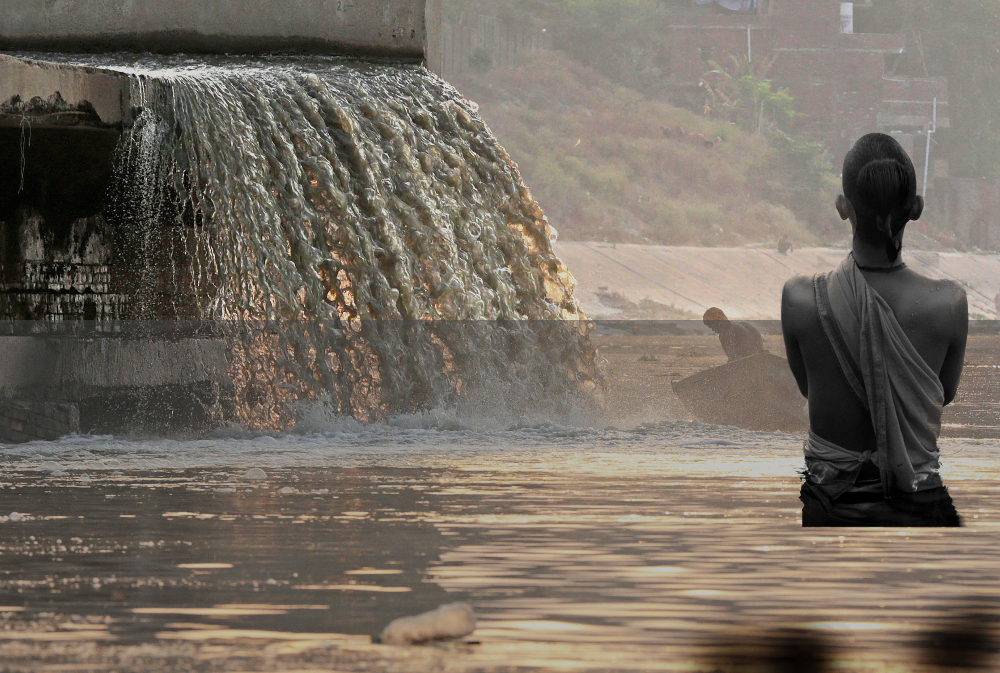
Can we saveGANGA?
The Ganga is getting political attention. What does it take to clean the river? SOMA BASU and SUSHMITA SENGUPTA travel with photographer VIKAS CHOUDHARY from Kanpur to Varanasi, the river's most polluted stretch, to understand why the pollution is so persistent
while SUNITA NARAIN suggests ways to clean it
while SUNITA NARAIN suggests ways to clean it
UMA SHANKAR is fidgety as he rows his boat in the Ganga in Varanasi. His mouth, full of betel nut juice, is swollen like a water balloon. His head is pounding in the eagerness to spit it out. At such moments earlier, he would conveniently empty his mouth into the Ganga and take tourists around, telling stories of the holy river and the ghats. But the 40-year-old Nishad, a community hailed as children of water in mythology, is in a rush to reach the other side of the river. He cannot dare to spit the betel nut juice into the water. After all, Union water resources minister Uma Bharti has recently announced that people found spitting in the Ganga could be fined Rs 10,000 or jailed for three days.
Shankar steals a glance at the camera of Down To Earth photographer, scared that just one picture of him spitting may cost him his boat. His attempt is laudable. But what would a little spit do in the sea of sewage that is spilled into the river every day. In 1986, the government had launched the first phase of Ganga Action Plan (GAP-I) to protect the country’s largest river basin. It selected stretches of the river along 25 cities in Uttar Pradesh, Bihar and West Bengal. In 1993, GAP-II was initiated which included the river’s tributaries—the Yamuna, Gomti, Damodar and the Mahanadi. On February 20, 2009, the Union government gave the Ganga the status of a National River and re-launched GAP with a reconstituted National Ganga River Basin Authority. The re-launched GAP took into account the entire river basin and emphasised the river’s need to have adequate water to maintain its ecological flow. But five years after the re-launch, pollution levels are still, to say the least, grim. Rivers have the ability to clean themselves—to assimilate and treat biological waste using sunlight and oxygen. But the Ganga gets no time to breathe and revive. There are more settlements and many more people who live along its banks. All take water and return only waste. The Ganga dies, not once but many times in its 2,500 km journey from the Gangotri in the Himalayas to Diamond Harbour in the Bay of Bengal (see ‘Highly polluted stretches’).
The July 2013 report of the Central Pollution Control Board (CPCB) shows unacceptable levels of faecal coliform, a clear sign of human excreta, all along the river’s mainstream (see ‘Faecal coliform levels...’). 
But it is even more worrying that faecal coliform levels are increasing even in upper reaches like Rudraprayag and Devprayag, where the river’s oxygenating ability is the highest. In these parts, water withdrawal for hydropower plants has put the river’s health in danger. As the Ganga flows down the plains, water is taken away for irrigation and drinking, so much so that during winters and peak summer months the river goes dry in many parts, and only sewage flows between its banks. The holy river is, thus, converted into a stinking sewer.
Thirty-six settlements, classified as Class-I cities, contribute 96 per cent of wastewater draining into the river. According to CPCB’s 2013 report, 2,723 million litres per day (mld) of domestic sewage is discharged by cities located along the river. But even this may be a gross underestimate as the calculation is based on the water that is supplied in the cities. As city managers often do not supply all the water that is used—much is groundwater—the actual sewage is often higher. This is what CPCB found when it measured the discharge from drains into the Ganga—6,000 mld was discharged into the river (see ‘State of pollution’).
 Needless to say, the capacity to treat this sewage is inadequate. But it is even smaller, if we consider two facts: one, that the gap between sewage generation and treatment remains the same every year—55 per cent. So even as the treatment capacity is added, more sewage gets added because of population growth. The situation worsens if the actual measured discharge from drains is taken to estimate the pollution load. Then the gap between what is installed and what is generated goes up to 80 per cent.
Needless to say, the capacity to treat this sewage is inadequate. But it is even smaller, if we consider two facts: one, that the gap between sewage generation and treatment remains the same every year—55 per cent. So even as the treatment capacity is added, more sewage gets added because of population growth. The situation worsens if the actual measured discharge from drains is taken to estimate the pollution load. Then the gap between what is installed and what is generated goes up to 80 per cent.
Over and above this, 764 industrial units along the main stretch of the river and its tributaries Kali and Ramganga discharge 500 mld of mostly toxic waste. All efforts to rein in this pollution have failed.
The horror does not end here. These cities have grown without planning and investment, so most do not have underground drainage networks. Even in Allahabad and Varanasi 80 per cent of the areas are without sewers. Waste is generated but not conveyed to treatment plants. There is no power to run treatment plants; bankrupt municipalities and water utilities have no money to pay for operations. CPCB checked 51 out of 64 sewage treatment plants (STPs) along the Ganga in 2013. It found only 60 per cent of installed capacity of the plants was being used; 30 per cent of the STPs were not even operational. So actual treatment is even less, and untreated waste discharged into the river even more.
Ganga’s journey through Uttar Pradesh—from Kanpur through Unnao, Fatehpur to Raibareilly and then Allahabad and Varanasi via Mirzapur—is killing. The river does not get the chance to assimilate the waste poured into it from cities and industries. It is only in Allahabad that some cleaner water is added through the Yamuna, which helps it to recover somewhat. Then as it moves towards Varanasi, sewage is poured in again. It dies again.
This land is where the poorest of India live; where urban governance is almost non-existent; and pollution thrives. In 2013, CPCB identified 33 drains along the Kanpur-Varanasi stretch with high biological oxygen demand (BOD), the key indicator of pollution. Of the 33, seven are big offenders, with high BOD load.
Uttar Pradesh has 687 grossly polluting industries, finds CPCB. These largely small scale, often illegal units—tanneries, sugar, pulp and paper and chemical—contribute 270 mld of wastewater. But what really matters is the location of the plants. While over 400 tanneries contribute only 8 per cent of the industrial discharge, they spew highly toxic effluent into the river and are located as a cluster near Kanpur. So the concentration of pollution is high. It is alarming that not much is happening to control pollution. The law is helpless. In 2013, an inspection of 404 industrial units by CPCB showed that all but 23 did not comply with the law. Directions have been issued and closure notices served. But it is business as usual.
Pollution has unnerved the people living along the river. After Uma Shankar manages to rinse his mouth, he says, “We cannot wash or bathe or catch fish. Why are the drains that pour in the city’s filth not plugged? People talk of cleaning the Ganga. The slogan should be ‘save the Ganga’.”
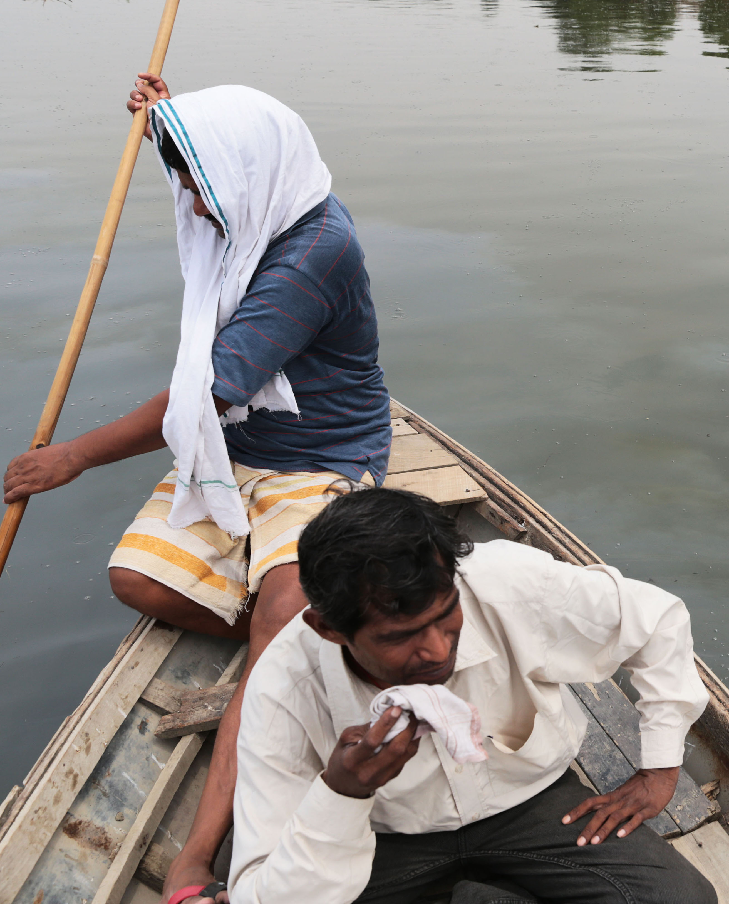

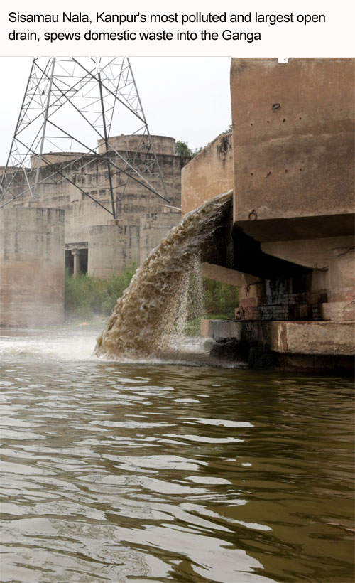
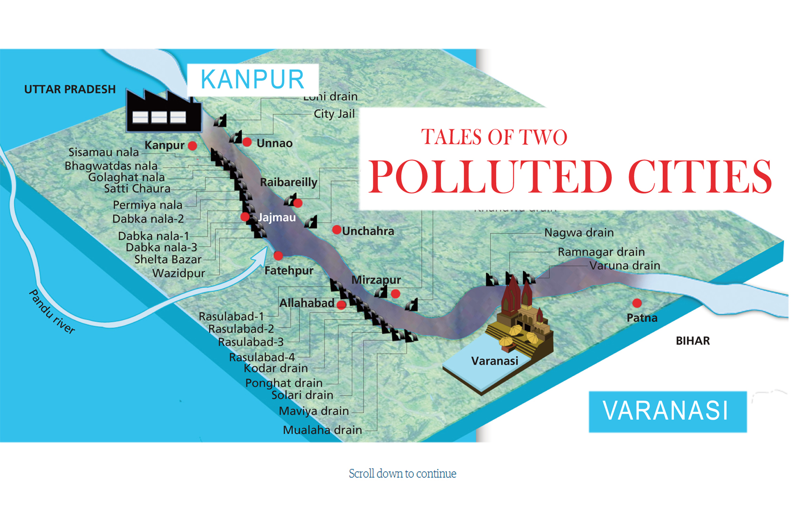
Kanpur unabashedly dumps poisonous industrial effluent into the Ganga, while Varanasi releases its untreated wastewater in absence of sewerage network
Sisamau nala, the largest open drain in Kanpur, is infamous for many reasons. Unclaimed bodies and garbage are unabashedly dumped into it. People living in Bakarmandi, a densely populated settlement along the nala, have horrifying stories to tell. While one talks about the nightmares his child had after a human carcass got stuck in the drain just metres from his doorstep, another narrates the torture of living amid faeces, garbage and snakes after the monsoon made the nala swell and enter his house.
But then no one can complain that authorities do not work. Every morning about 20 safaikarmacharisjump into the thick concoction of sewage and chemicals, and remove all that obstructs the nala’s flow. In the afternoon, the heap collected in the morning is pushed back into the nala, and the day goes on as usual. The cycle continues day after day.
As SisamauNala falls into the Ganga near BhaironGhat, it paints a pretty picture as a waterfall. But no one ventures close to it because of the unbearable stench it emanates. Boatmen fear their oars may get stuck in plastic, clothes and other trash that the nala carries. “Water here is so poisonous that often dead fish are seen floating on it,” says fisher Vijay Kumar. He can catch only hybrid telapia, an invasive species which manages to survive high toxicity in the water. He sells the fish in the market. “It is impossible to get freshwater fish like rohu here,” he says.
 On the other side of the river, Rajesh Kumar Kashyap grows gourd and melon. “I cannot use river water to irrigate my plants. They will die if I do so,” he says. So he dug up a borewell. With the diesel cost added, his profit per season does not go beyond Rs 5,000.
On the other side of the river, Rajesh Kumar Kashyap grows gourd and melon. “I cannot use river water to irrigate my plants. They will die if I do so,” he says. So he dug up a borewell. With the diesel cost added, his profit per season does not go beyond Rs 5,000.
Just like Sisamau, 22 drains and over 400 industries, mostly tanneries, discharge toxic waste into the Ganga at Kanpur (see ‘The polluters’). The river receives 435 million litres per day (mld) domestic sewage and 50 mld waste from tanneries. Two STPs, of 5 mld and 130 mld capacity, treat domestic waste and a 36 mld common effluent treatment plant (CETP) treats 9 mld industrial and 27 mld domestic waste. The city has 162 mld of installed capacity to treat domestic sewage, but only 140.98 mld sewage reaches the plants, says Rajesh Kumar, project manager, Jal Nigam. A big reason for this is that only 39 per cent of the city is connected to the sewage system, he says. This means rest of the sewage, generated by 2,800,000 people, is dumped directly into the Ganga. Even the quality of waste that reaches the plants is far more polluted than they are designed to treat, says Kumar (see ‘Ineffective STPs’). During long power cuts STPs cannot run—diesel theft is common here. So effluent is discharged untreated into the river. The river dies again and again.
Building drains, going nowhere

Jajmau, a suburb of Kanpur, has an active tannery industry. But it does not have a sewerage network. The Jal Nigam has prepared a masterplan to develop a sewerage network here, which will get money from the National Ganga River Basin Authority (NGRBA) funds, says Ajay Singh Gaur, projects manager, Jal Nigam. According to the masterplan, by 2050 Jajmau’s population would increase to 1,600,000 people who will generate 220 mld wastewater. By 2050, as much as 2,455 km of sewer will be laid out, says Gaur. But this plan is another pipe dream as past plans for drainage have gone nowhereKanpur received Rs 73 crore under GAP-I, Rs 87 crore under GAP-II and Rs 370 crore under Jawaharlal Nehru Urban Renewal Mission (JNNURM) to set up a sewage collection and treatment system. But despite the funds, not even 50 per cent of the city is connected to sewer lines. According to IIT-Consortiums for NGRBA, the projects under GAP-II are still incomplete. “Most of the work under JNNURM is pending due to lack of funds or absence of permission from the district administration,” says Rajesh Kumar, project manager, Jal Nigam. The nigam has now asked the state government for more funds to complete work pending under JNNURM.
Pankaj Bhushan, environment engineer, Kanpur Nagar Nigam, says JNNURM projects are delayed because land for setting up STPs is not available. Almitra H Patel, member of the Supreme Court Committee for Solid Waste Management, does not buy this argument. The riverbank where the Sisamau drain falls into the Ganga is a graveyard of failed enterprises—Elgin Mills (18 ha), Tannery and Footwear Corporation of India (15 ha) and a riverside powerhouse (12 ha). “An advantage of this site is the enormously long and wide channel that the Sisamau outfall has carved out for itself. The area can be converted into a series of oxidation ponds by bunding the riverbed. This can support fish life and restore natural ecology of the stream,” she says. But engineers do not have time for such innovative solutions. They are busy planning more drainage and STPs. So what if they do not get built?
The state government has also taken steps to modernise the ghats. It has allocated Rs 30 crore in its budget for the purpose, says Alok Ranjan Mishra, chief secretary, Uttar Pradesh. The work includes setting up of toilets. Some toilets have already been set up. “But these are too far from the ghats,” says Jyoti Ram, priest at SarsaiyyaGhat.
So, with many plans and much money allocated to clean the river, millions of litres of sewage continue to pour into the Ganga at Kanpur. According to the Jal Nigam, the city’s population will increase to close to 6 million in 2030, while sewage generation will more than double. The problem is that the Ganga cleaners still think that they will be able to fix the city’s sewage network someday, and all the sewage will be intercepted and treated before it is discharged into the river. Given their dismal track record, the fate of the Ganga in Kanpur seems sealed as soiled..

The holy city, now the constituency of the prime minister, is a mesh of narrow lanes housing centuries-old buildings. Stepping into these lanes requires great caution. Human and animal excreta are almost everywhere on the cobbled path. It is not without reason that people call a large part of Varanasi an open defecation ground.
The garbage collection system is virtually non-existent; sewage connectivity exists in small parts of the old city, but even there it has more or less gone under (see ‘Varanasi disconnected’). The rest of the city spews its waste into open drains and from there into the Ganga. Open defecation spots line the banks. All in all, waste and pollution are drowning the city of 3,600,000 people and a large number of pilgrims and tourists, and taking a toll on the river.
Now there is change in the air. The new prime minister, NarendraModi, has said that cleaning the Ganga is his personal mission.
So, within a month of his swearing in, on June 21, Union urban development secretary Sudhir Krishna reached the city and held meetings with senior officials of the Jal Nigam and the Nagar Nigam. After inspecting various sites, Krishna spoke to mediapersons and said the sewerage system developed under Jawaharlal Nehru Urban Renewal Mission (JNNURM) was not connected to the sewage treatment plants (STPs) at many places. In other words, it is not helping clean the river.
City named after its rivers, now drains
It is said that Varanasi’s name is derived from rivers Varuna and Assi. These freshwater rivers could have been a great source of dilution for the Ganga. But years of negligence has turned them into drains. A right to information (RTI) query filed early this year by U K Choudhary, professor at Ganga Research Centre, Banaras Hindu University, shows that in April, 2013, the Jal Nigam decided to keep the Assi free from sewage lines.
Despite this, a couple of months later it laid down a 120-metre sewage pipeline from Kewaldham to SankatMochan temple, which flows into the Assi. More sewage pipelines were set up which discharge waste into the Assi and the Varuna. Besides, there are 31 drains that dump effluent into the Ganga. The two rivers, which had the potential to give the Ganga a fresh lease of life, only increased the pollution load.
 When Down To Earth asked a Jal Nigam engineer for the composition of waste before it reaches the Dinapur treatment plant, he said he had no information on it. Neither did he have any knowledge on the condition of branch sewer lines near the main ghats of Varanasi.
When Down To Earth asked a Jal Nigam engineer for the composition of waste before it reaches the Dinapur treatment plant, he said he had no information on it. Neither did he have any knowledge on the condition of branch sewer lines near the main ghats of Varanasi.
A classic example of bad planning is the 140-mld STPproposed to be built at Sathwa, says B D Tripathi, member, NGRBA. The STP was to get sewage from the city, so the Jal Nigam set up a pipeline for the purpose. But when farmers refused to give their land, the Jal Nigam planned to divert the pipeline to the STP near Dinapur, which is 19 km away and at a slightly higher altitude. Pumping sewage to make it flow against gravity requires electricity, which means added cost.
Old city's old sewerage system
Varanasi was introduced to the sewerage system in 1891, say Jal Nigam officials. Three key drains—Rajghat, Nagwa, Ramnagar—carried sewage and stormwater. In 1954, the state government started building sewage pumping stations on different ghats to intercept the sewage and divert it to a farm in Dinapur village located at the city’s end. In the 1970s, pumping stations at HarishchandraGhat, Rajendra Prasad Ghat, JalasenGhat and TrichlochanGhat were completed and handed over to JalSansthan, the city’s water agency.
After GAP-I was launched in 1986, STPs were established at Bhagwanpur (9.8 mld capacity), Dinapur (80 mld capacity) and at Diesel Locomotive Works (12 mld capacity). Two pumping stations, at Mansarovar and Konya, were also built. At present, 30 per cent of the city is connected to sewerage network, to tackle 300 mld of waste.
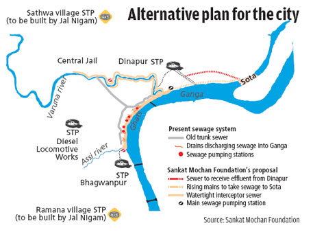
As early as 1997 a city-based group, SankatMochan Foundation, had suggested an affordable variation on the expensive pollution scheme (see ‘Alternate plan for the city’). The city could build watertight interceptors along the ghats that worked on the principle of gravity, cutting electricity (pumping) costs. Some 5 km downstream of the city, in Sota, the sewage could be treated in advanced integrated oxidation ponds with the help of bacteria and algae. The capital cost of this alternative was projected to be Rs 150 core.But it had been rejected, again and again, by the engineering brains of Varanasi’s public water works department. Their excuse, as the consultants repeat, is that the interceptor it proposes is not feasible for it would disrupt pilgrims and damage the historic ghats during excavation. “There is enough flow of money but the Jal Nigam is not interested in doing concrete work,” says Vishambhar Mishra of SankatMochan Foundation. His father Veer Bhadra Mishra, who passed away last year, had spent his life working to find solutions to the river’s pollution.
GAP-II, launched in 1993, sanctioned four projects (see ‘GAP-II status in Varanasi’). Three were to intercept and divert sewage and one to set up a 50 mldSTP. Jal Nigam officials say 139 km out of the planned 142 km of sewer lines under GAP-II are in place. But it is still unclear if these add to anything because the lines are not connected to the STPs. The proposed STP has not been set up because land is not available. Jal Nigam has now revised the cost of the work from Rs 309.12 crore to Rs 407.31 crore. More money leads to more pollution is the dictum of this river-cleaning non-business.
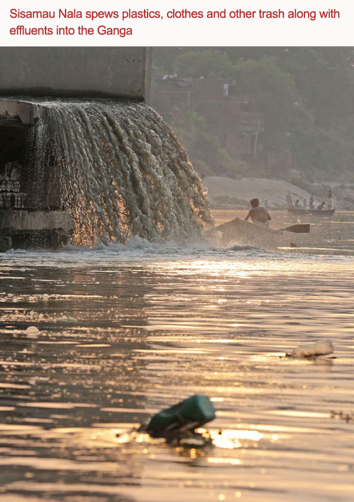
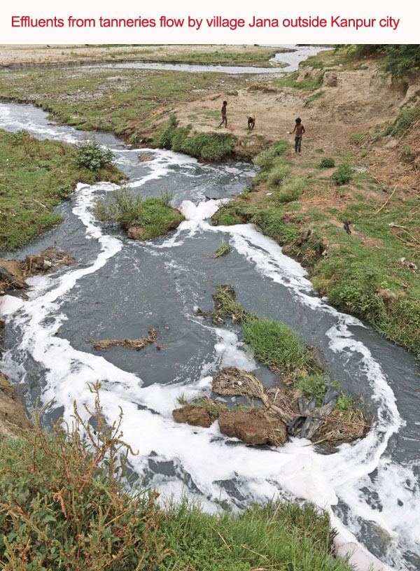
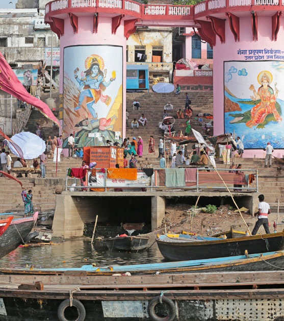
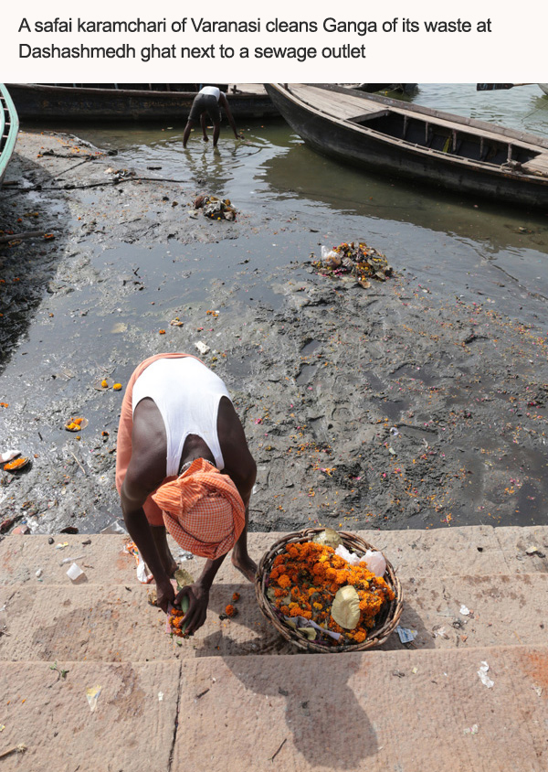
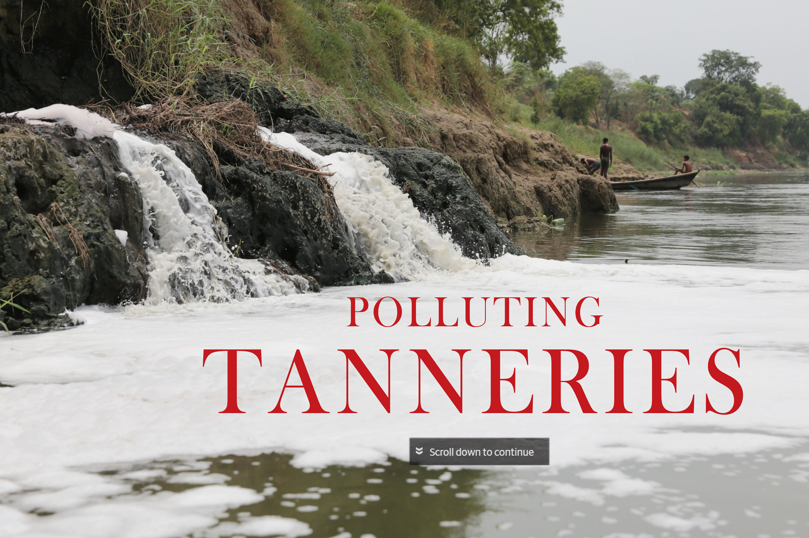
The ganga is thick and black at the outfall of WazidpurNala at Jajmau, Kanpur. A drive along the drain is enough to make one dizzy. It carries sludge loaded with chemicals from over 400 tanneries in the city and dumps it directly into the Ganga.
The 150-year-old tanneries are the biggest reason for pollution in the Ganga, shows response to a public interest petition filed in 2006 at the Allahabad High Court. The tanneries no longer use environment-friendly vegetable dyes for tanning leather. Instead, they use highly toxic chromium which is cost-effective. There are some units which discharge chromium 100 times the permissible level. An analysis done by IIT-Kanpur in April 2014 states that the only plant that treats industrial waste, receives wastewater with 192 mg per litre chromium. The Uttar Pradesh Pollution Control Board (UPPCB) has set 2 mg per litre as the standard for influent.
Neither the tannery owners, nor the authorities take the blame for the pollution. Imran Siddiqui, director of Super Tannery Limited, says the CETP, built in 1986, was designed to treat only industrial waste. But it has to treat domestic waste also, which then reduces its capacity to clean tannery waste. The Jal Nigam says the JajmauCETP was designed to treat effluent from units using vegetable dyes. Because of high chemical content in the effluent, the CETP often malfunctions. So untreated effluent is drained into the Ganga, says a Jal Nigam official who did not wish to be named. The 36-mld CETP is designed to treat only 9 mld tannery waste.
According to the Uttar Pradesh State Industrial Development Corporation (UPSIDC), there are 170 tanneries in Kanpur. But currently, 400 tanneries are operating in the area, says the state pollution control board. Tannery owners increase the number of units on single registration and claim that the new factories are only sub-properties of the main property, says the Jal Nigam official. Ajay Kanojia, process chemist, JajmauCETP, says tannery units do not have their primary effluent treatment plants in order. In most places flow metres, which check the amount of wastewater flowing from tanneries to the drains, do not function. It is the same case with chromium recovery units, which have been set up according to UPPCB guidelines. So, the end result is pollution.
Shift or not?
The Allahabad High Court suggested that tanneries should be shifted to areas which have provision to treat effluent before it is dumped into the river. UPSIDC has allotted 69 ha for tanneries at Ramaipur near the Panduriver on the outskirts of Kanpur, says R S Pathak, regional manager, UPSIDC. But reloaction has not always been a success. 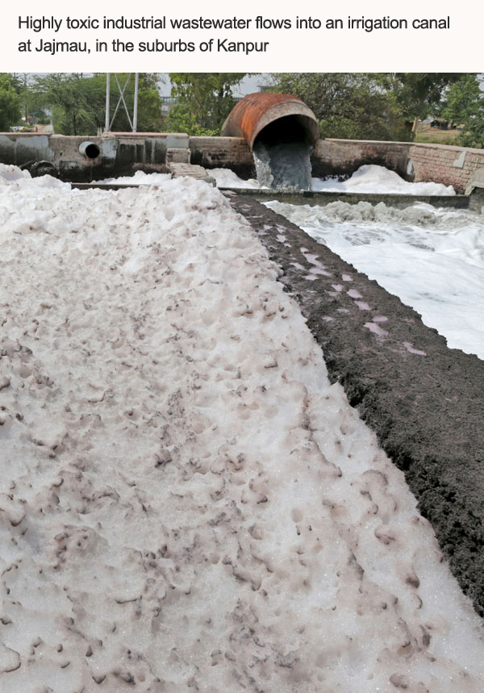 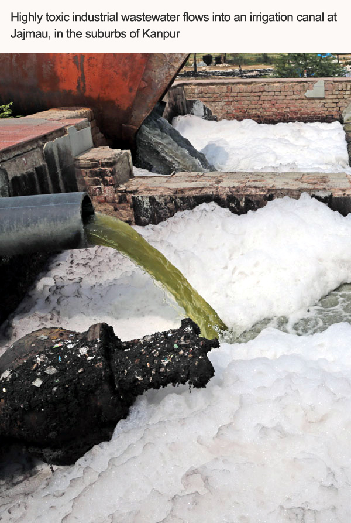
In 2005, the tanneries in Tangra, Kolkata, were shifted to Bantala Leather Complex, close to East Kolkata Wetlands. The CETP there should have had six modules to treat chemical waste as per the design of United Nations Industrial Development Organisation. But the government could set up only four. These, too, stopped functioning within months of completion. The Bantala plan proved to be a failure, and the tanners returned to Tangra.
Tannery owners of Kanpur have also expressed displeasure over the high court proposal. Jajmau Tanneries Association and Jajmau Tanneries Envir-onmental Protection Association have requested the government to rethink its plan, says Siddiqui. The industries at Jajmau and Unnao had together exported leather costing Rs 6,000 crore last year. Members of the associations say shifting will cost more than Rs 20,000 crore. It will also force smaller tanneries to close down, and the bigger ones will have problems procuring raw material and labourers at the new site, they say.
In 2009, tannery associations involved IL&FS Cluster Development Agency, an infrastructure project development and financing institution, to prepare a detailed project report to upgrade the CETP for tannery cluster at Jajmau. They proposed four modules of 16 mld each and got the state government to finance 20 per cent of the project. They forwarded the proposal to the Centre for further finances. The project was later junked by the Central Leather Research Institute, which prepared another project report worth Rs 3 crore for a 50 mld zero-waste CETP. P K Asudani, Jal Nigam managing director, says the project’s cost was to be shared 25 per cent by the state government, 25 per cent by the tanneries and 50 per cent by the Centre. “Till date nobody has given any money,” he says.
In 2011, the high court had ordered closure of the polluting tannery units but they are back in business, says the Jal Nigam official. In 2012 and 2013, the Central Pollution Control Board (CPCB) served notices to the tannery industry to maintain the quality of discharge as per CPCB norms. Following this some units reduced the quantity of chromium used in the tanning process. It helped their primary treatment plants as well as chromium recovery units to start functioning. But soon they reverted to their old ways.
“CPCB has often served the industry stop work notices. But even when the factory gates are closed, operation continues inside,” says SeemaPandey, member of ShramBharati, non-profit which works to rehabilitate the tannery workers of Jajmau.
Jal Nigam officials are scared to take action against the industry. “The tanneries are under direct control of a political heavyweight. Besides, the mafia here is very active. Even CPCB officials do not dare to inspect the area,” alleges a Nagar Nigam official. “There have been several incidents when government officials have been heckled and inspection teams chased away,” he says. Meanwhile, toxic effluents continue to flow into the Ganga.
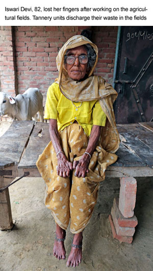
His mother has deformed fingers. Eighty-two-year-old Iswari Devi has always worked on the fields. Kumar says it's the toxic chemical laden water from the tanneries in their fields that cripples them. "All those who work on the fields have their fingers and toes deformed," he says. One of them, Shiv CharanNishad, thought it was an early sign of leprosy. He rushed to the doctor, but was told that the chemicals released from tanneries nearby were the culprit.Eight-year-old Anwar, son of a worker at a tannery in Jajmau, Kanpur, always complains of stomach ache. He looks smaller than his age, like most people in Jajmau. He lives in a slum close to WajidporeNala. "We breathe in gas emanating from the drain day in and day out. Doctors tell us to live in a clean and hygienic place, but we have nowhere to go. It seems being sick is our fate," says a dejected AminaBibi, Anwar's mother.
People who own animals give them water from the only tubewell that is not contaminated. Buffaloes have lost the power to conceive and stopped giving milk. The stories are similar in nearby villages like Kulgaon and Atwa. At RamadeviMandi, the vegetable market, nobody wants to buy anything that comes from Jana, once known for its rose plantations. "Vegetables have no taste. Even cooked food gets infested by insects if left in the open for an hour," says 42-year-old Rama Devi. Water from the tubewell turns yellow if exposed to air. "The iron poles and gates of houses have started corroding," she adds.
RajanKashyap of Jana says about 10 years ago residents contributed money and approached a non-profit to help them fight a court case against the tanneries. After a case was filed in the Allahabad High Court, the person from the non-profit disappeared with all the money and documents. "He was being paid by industry owners," says Kashyap.
The industries used to discharge effluent into the fields and claim money for it saying it would nourish the crops, he says. "When we said we did not want dirty water, they told us to take it for free. We resist but there is no one to listen to us".
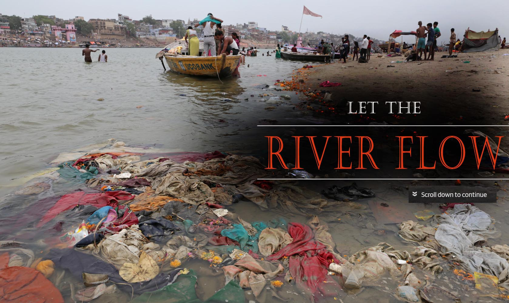
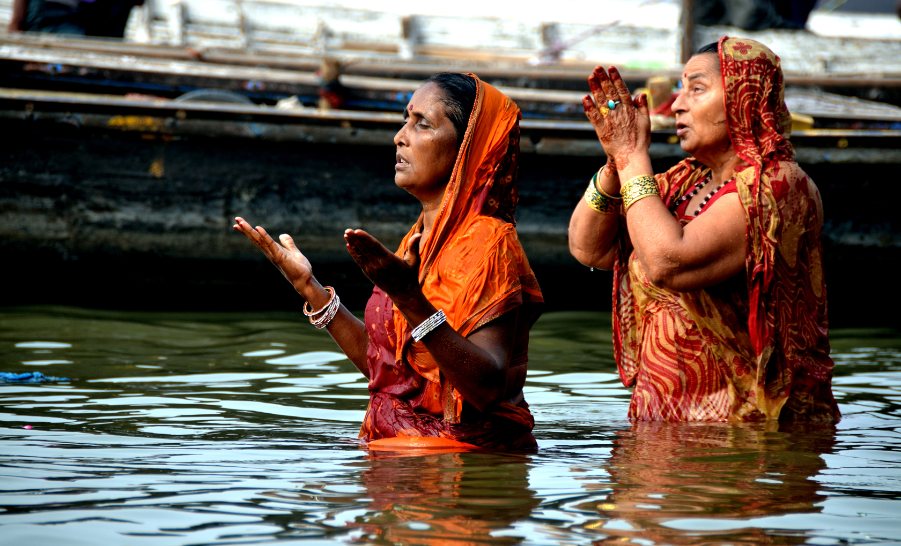
The bottom line is that we all live downstream. If we don’t clean the Ganga we will be the biggest losers—a generation will lose something as valuable and precious as rivers. This, says CSE, is unacceptable. It is time governments understood this and redesigned the programmes for cleaning the Ganga.